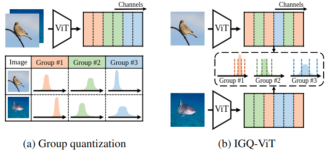
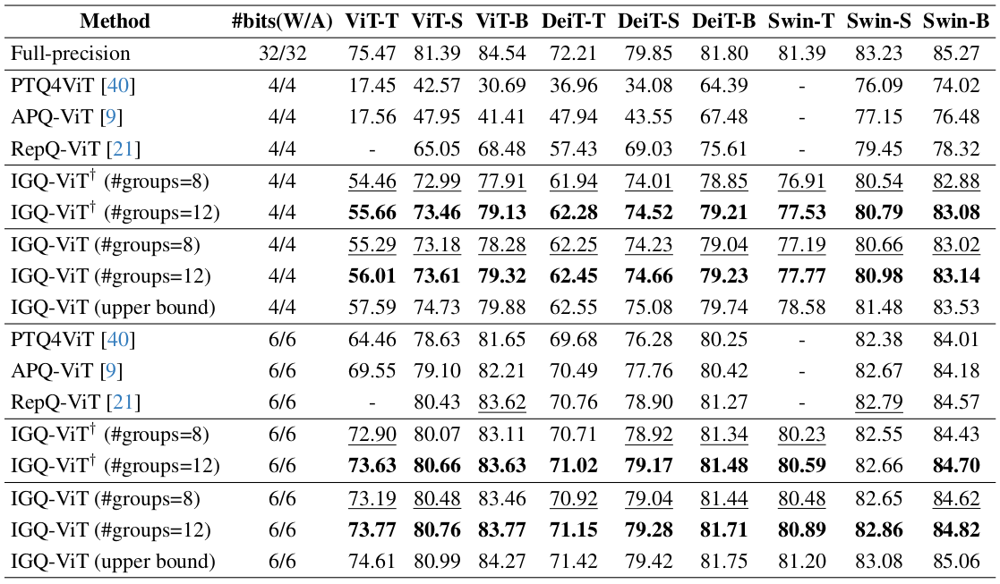

Visual comparison of group quantization and IGQ-ViT. Conventional group quantization techniques divide consecutive channels uniformly into a number of groups without considering their dynamic ranges. The distribution of activations in each group varies significantly for individual input instances. To alleviate this problem, IGQ-ViT proposes an instance-aware grouping technique that splits the channels of activation maps and softmax attentions across tokens dynamically for each input instance at runtime.
Abstract
Post-training quantization (PTQ) is an efficient model compression technique that quantizes a pretrained full-precision model using only a small calibration set of unlabeled samples without retraining. PTQ methods for convolutional neural networks (CNNs) provide quantization results comparable to full-precision counterparts. Directly applying them to vision transformers (ViTs), however, incurs severe performance degradation, mainly due to the differences in architectures between CNNs and ViTs. In particular, the distribution of activations for each channel vary drastically according to input instances, making PTQ methods for CNNs inappropriate for ViTs. To address this, we introduce instance-aware group quantization for ViTs (IGQ-ViT). To this end, we propose to split the channels of activation maps into multiple groups dynamically for each input instance, such that activations within each group share similar statistical properties. We also extend our scheme to quantize softmax attentions across tokens. In addition, the number of groups for each layer is adjusted to minimize the discrepancies between predictions from quantized and full-precision models, under a bit-operation (BOP) constraint. We show extensive experimental results on image classification, object detection, and instance segmentation, with various transformer architectures, demonstrating the effectiveness of our approach.
Results

Quantitative results of quantizing ViT architectures on ImageNet. W/A represents the bit-width of weights (W) and activations (A), respectively. We report the top-1 validation accuracy (%) with different group sizes for comparison. $^\dagger$: Results without using a group size allocation (i.e., a fixed group size for all layers).
We show in this table the top-1 accuracy (%) on the validation split of ImageNet with various ViT architectures. We report the accuracy with an average group size of 8 and 12. We summarize our findings as follows: (1) Our IGQ-ViT framework with 8 groups already outperforms the state of the art except for ViT-B and Swin-S under 6/6-bit setting, while using more groups further boosts the performance. (2) Our approach under 4/4-bit setting consistently outperforms RepQ-ViT by a large margin. Similar to ours, RepQ-ViT also addresses the scale variations between channels, but it can be applied to the activations with preceding LayerNorm only. In contrast, our method handles the scale variations on all input activations of FC layers and softmax attentions, providing better results. (3) Our group size allocation technique boosts the quantization performance for all models, indicating that using the same number of groups for all layers is suboptimal. (4) Exploiting 12 groups for our approach incurs less than 0.9% accuracy drop, compared to the upper bound under the 6/6-bit setting. Note that the results of upper bound are obtained by using a separate quantizer for each channel of activations and each row of softmax attentions.
Paper
|
|
|
|
J. Moon, D. Kim, J. Cheon and B. Ham
Instance-Aware Group Quantization for Vision Transformers
In IEEE/CVF Conference on Computer Vision and Pattern Recognition (CVPR) , 2024
[arXiv]
|
Acknowledgements
This work was supported in part by the NRF and IITP grants funded by the Korea government (MSIT) (No.2023R1A2C2004306, No.RS-2022-00143524, Development of Fundamental Technology and Integrated Solution for Next-Generation Automatic Artificial Intelligence System, and No.2021-0-02068, Artificial Intelligence Innovation Hub).